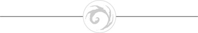

Allomancy was, indeed, born with the mists. Or, at least, Allomancy began at the same time as the mists’ first appearances. When Rashek took the power at the Well of Ascension, he became aware of certain things. Some were whispered to him by Ruin; others were granted to him as an instinctive part of the power.
One of these was an understanding of the Three Metallic Arts. He knew, for instance, that the nuggets of metal in the Chamber of Ascension would make those who ingested them into Mistborn. These were, after all, fractions of the very power in the Well itself.
9

TENSOON HAD VISITED the Trustwarren before; he was of the Third Generation. He had been born seven centuries ago, when the kandra were still new—though by that time, the First Generation had already given over the raising of new kandra to the Second Generation.
The Seconds hadn’t done very well with TenSoon’s generation—or, at least, that was how the Seconds felt. They’d wanted to form a society of individuals who followed strict rules of respect and seniority. A “perfect” people who lived to serve their Contracts—and, of course, the members of the Second Generation.
Up until his return, TenSoon had generally been considered one of the least troublesome of the Thirds. He’d been known as a kandra who cared little for Homeland politics; one who served out his Contracts, content to keep himself as far away from the Seconds and their machinations as possible. It was ironic indeed that TenSoon would end up on trial for the most heinous of kandra crimes.
His guards marched him right into the center of the Trustwarren—onto the platform itself. TenSoon wasn’t certain whether to be honored or ashamed. Even as a member of the Third Generation, he hadn’t often been allowed so near the Trust.
The room was large and circular, with metal walls. The platform was a massive steel disk set into the rock floor. It wasn’t very high—perhaps a foot tall—but it was ten feet in diameter. TenSoon’s feet felt cold hitting its slick surface, and he was reminded again of his nudity. They didn’t bind his hands; that would have been too much of an insult even for him. Kandra obeyed the Contract, even those of the Third Generation. He would not run, and he would not strike down one of his own. He was better than that.
The room was lit by lamps, rather than glowstone, though each lamp was enclosed in blue glass. Oil was difficult to get—the Second Generation, for good reason, didn’t want to rely on supplies from the world of men. The people above, even most of the Father’s servants, didn’t know there was a centralized kandra government. It was much better that way.
In the blue light, TenSoon could easily see the members of the Second Generation—all twenty of them, standing behind their lecterns, arranged in tiers on the far side of the room. They were close enough to see, study, and speak to—yet far enough away that TenSoon felt isolated, standing alone in the center of the platform. His feet were cold. He looked down, and noticed the small hole in the floor near his toes. It was cut into the steel disk of the platform.
The Trust, he thought. It was directly underneath him.
“TenSoon of the Third Generation,” a voice said.
TenSoon looked up. It was KanPaar, of course. He was a tall kandra—or, rather, he preferred to use a tall True Body. Like all of the Seconds, his bones were constructed of the purest crystal—his with a deep red tint. It was an impractical body in many ways. Those bones wouldn’t stand up to much punishment. Yet, for the life of an administrator in the Homeland, the weakness of the bones was apparently an acceptable trade-off for their sparkling beauty.
“I am here,” TenSoon said.
“You insist on forcing this trial?” KanPaar said, keeping his voice lofty, reinforcing his thick accent. By staying away from humans for so long, his language hadn’t been corrupted by their dialects. The Seconds’ accents were similar to that of the Father, supposedly.
“Yes,” TenSoon said.
KanPaar sighed audibly, standing behind his fine stone lectern. Finally, he bowed his head toward the upper reaches of the room. The First Generation watched from above. They sat in their individual alcoves running around the perimeter of the upper room, shadowed to the point where they were little more than humanoid lumps. They did not speak. That was for the Seconds.
The doors behind TenSoon opened, and hushed voices sounded, feet rustling. He turned, smiling to himself as he watched them enter. Kandra of various sizes and ages. The very youngest ones wouldn’t be allowed to attend an event this important, but those of the adult generations—everyone up through the Ninth Generation—could not be denied. This was his victory, perhaps the only one he would have in the entire trial.
If he was to be condemned to endless imprisonment, then he wanted his people to know the truth. More important, he wanted them to hear this trial, to hear what he had to say. He would not convince the Second Generation, and who knew what the Firsts would silently think, sitting in their shadowed alcoves? The younger kandra, however . . . perhaps they would listen. Perhaps they would do something, once TenSoon was gone. He watched them file in, filling the stone benches. There were hundreds of kandra now. The elder generations—Firsts, Seconds, Thirds—were small in number, since many had been killed in the early days, when the humans had feared them. However, later generations were well populated—the Tenth Generation had over a hundred individuals in it. The Trustwarren’s benches had been constructed to hold the entire kandra population, but they were now filled just by those who happened to be free from both duty and Contract.
He had hoped that MeLaan wouldn’t be in that group. Yet, she was virtually the first in the doors. For a moment, he worried that she’d rush across the chamber—stepping on the platform, where only the most blessed or cursed were allowed. Instead, she froze just inside the doorway, forcing others to push around her in annoyance as they found seats.
He shouldn’t have recognized her. She had a new True Body—an eccentric one, with bones made of wood. They were thin and willowy in an exaggerated, unnatural way: her wooden skull long with a pointed triangular chin, her eyes too large, twisted bits of cloth sticking from her head like hair. The younger generations were pushing the boundaries of propriety, annoying the Seconds. Once, TenSoon would probably have agreed with them—even now, he was something of a traditionalist. Yet, this day, her rebellious body simply made him smile.
That seemed to give her comfort, and she found a seat, near the front, with a group of other Seventh Generationers. They all had deformed True Bodies—one too much like a block, another actually sporting four arms.
“TenSoon of the Third Generation,” KanPaar said formally, quieting the crowd of watching kandra. “You have obstinately demanded judgment before the First Generation. By the First Contract, we cannot condemn you without first allowing you the opportunity to plead before the Firsts. Should they see fit to stay your punishment, you will be freed. Otherwise, you must accept the fate the Council of Seconds assigns you.”
“I understand,” TenSoon said.
“Then,” KanPaar said, leaning forward on his lectern. “Let us begin.”
He’s not worried at all, TenSoon realized. He actually sounds like he’s going to enjoy this.
And why not? After centuries of preaching that the Third Generation is filled with miscreants? They’ve tried all this time to overcome their mistakes with us—mistakes like giving us too much freedom, letting us think that we were as good as they were. By proving that I—the most “temperate” of the Thirds—am a danger, KanPaar will win a struggle he’s been fighting for most of his life.
TenSoon had always found it strange how threatened the Seconds felt by the Thirds. It had taken them only one generation to understand their mistakes—the Fourths were nearly as loyal as the Fifths, with only a few deviant members.
And yet, with some of the younger generations—MeLaan and her friends providing an example—acting as they did . . . well, perhaps the Seconds had a right to feel threatened. And TenSoon was to be their sacrifice. Their way of restoring order and orthodoxy.
They were certainly in for a surprise.